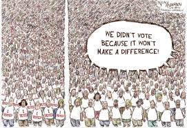
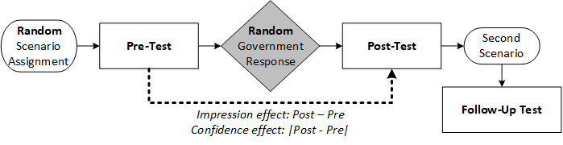
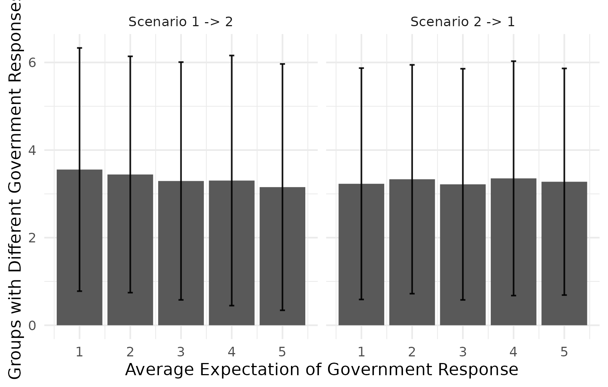

Efficacy and
Response to Response
How Experience Shapes Preferences and Expectations
in Low-Level Political Involvements
Xiangyu Young Scholar Forum, Nankai University
2023-04-27
TL;DR
Objective:
- Political experiences → online efficacy → future
- Impression effect
- Confidence effect
Method:
- Sequential scenario-based experiment
Finding:
- Political experiences in “low politics” make a difference
- On people’s political cognition
- On future involvements and general efficacy
- Impression > Confidence
What Political Involvements Change
Political involvement:
All types of voluntary public participation in political affairs coming into contact with government institutions and their agents (Verba and Nie 1987).
Known
- Experiences shape attitudes and behaviors (Bechler, Tormala, and Rucker 2021; Fazio, Zanna, and Cooper 1978)
Don’t know
- How
- What aspects are shaped
- How guiding future decisions
Why not know
Empirically, “high politics”

Theoretically, baysian rationality

Efficacy: Linking the experience and attitudes

- Efficacy as the link
- Efficacy → opinions/attitudes (Velasquez and LaRose 2015; Geurkink et al. 2020; Sulitzeanu-Kenan and Halperin 2013; Anderson 2010)
- Behavior, interest, identity, SES, network… → efficacy (Levy 2018; Karv, Lindell, and Rapeli 2022; Pei, Pan, and Skitmore 2018; Kudrnáč and Lyons 2018)
Response to response theory
Missing Piece
Outcome ≠ mechanism
Context
Low-politics online involvement
OPE (vs. GPE): Internal/external efficacy empowered by the Internet
Hypotheses
\(H_{1.1}\)(Impression effect): A more intense government response boosts citizens’ external OPE.
\(H_{1.2}\)(Confidence effect): A smaller gap between the government’s actual response and citizens’ prior expectations increases citizens’ internal OPE.
\(H_{2.1}\): Impression effect → expectations ↑.
\(H_{2.2.0}\): Confidence effect ⥇ expectations, but preferences
\(H_{2.2.1}\): Confidence effect → expectations ↑ < impression effect.
\(H_{3.0}\): Impression/confidence effects → OPE; ⥇ GPE.
\(H_{3.1}\): Impression → external GPE ↑, and a higher confidence effect → internal GPE ↑.
Experimental Design

Measurement
Pre-test
- Evaluation
- OPE: Internal & external (1–10)
- GPE: Internal & external (1–10)
- Expectation of response (1–5)
- Suggestion
- Path to response (Type 1–9)
Post-test
- Evaluation
- OPE
Follow-up test
- Evaluation
- OPE: Internal & external (1–10)
- GPE: Internal & external (1–10)
- Expectation of response (1–5)
- Suggestion
- Path to response (Type 1–9)
Data Collection
- Pre-registered experiment
- “Online Behavior Survey of Chinese Youth” (OBSCY) in 2020
- Youth? (Lee, Chang, and Hur 2021; Martin, Martins, and Naqvi 2018)
- Quota sampling, adjusted by education and gender from the census
- 189 cities (excluding Tibet, Hong Kong, Macao, and Taiwan) 
- Attention check: all respondents using fewer than 10 mins were removed
Results


Conclusion
- Political experiences influences political cognitions through OPE
- Both work, while the impression effect is more influential.
- Implications
- Direct causal evidence of how involvements shape thoughts
- OPE Vis-à-vis GPE
- Much more waiting for exploration: Within and beyond China, short/long effects; what affects path selection……